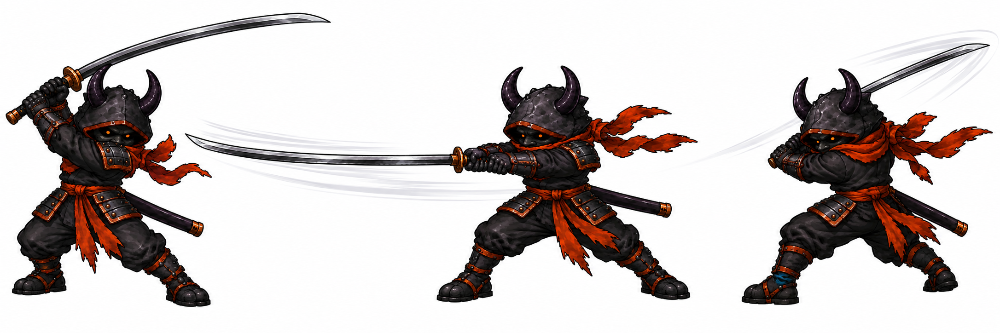
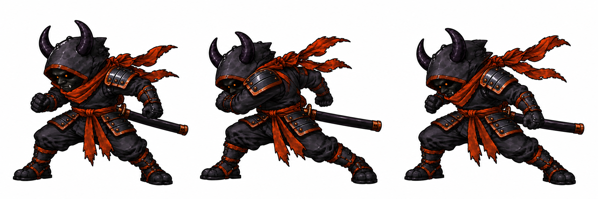
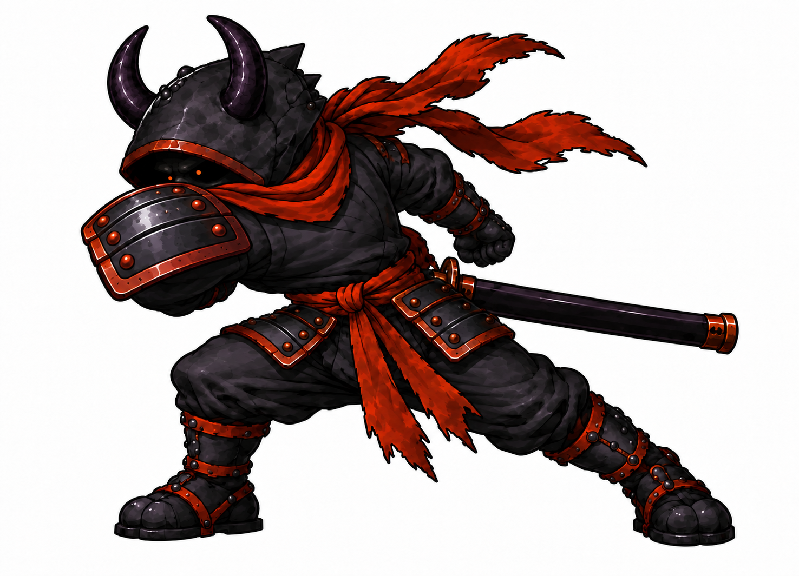

Attack redraws · first key-pose pass
These are new pose studies for the next frame-by-frame art pass. Anthony approved the exact Executioner images and Kael's one-long/one-short pose direction. Kael's face correction below is the current review image: one solid white eye in a black void. Connected breakdowns, in-betweens, native-size playback, mirrored checks, and sprite installation have not yet been made.
Executioner · heavy long-katana swing Approved study
The long katana carries the hit through windup, full reach, and follow-through. Keep his approved demon mask, circular orange eyes, one shoulder pad, and both waist pads. A continuous blade-tip path still needs validation in the finished sequence.

Executioner · shoulder bump Approved study
The katana stays sheathed. His single armored shoulder must drive contact, including in mirrored playback. The selected three-pose sheet is preserved exactly.

Separate pad-first contact placement study
This later isolated drawing explores how to bring the pad in front of the face and fist at impact. It is not the selected three-pose sheet.

Kael · one long, one short · void face Eye correction for review
Anthony confirmed one long katana and one short sword. The long blade takes the outer heavy cut while the short blade guards or redirects on its own inner track. Both arms act on the same beat without the swords tangling. His face is a black void with one visible solid white eye and no pupil, iris, or visible skin.

Current game-cell comparison · Next drawing and review steps · Key-pose staging data